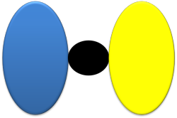
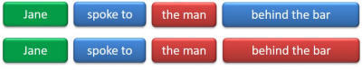
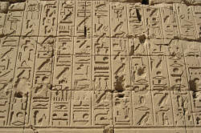

Prepositional phrases

There is a simpler introduction to prepositions on the initial plus training pages. You may like to review that before going on.
 |
Definitions |
A prepositional phrase has two parts: the preposition and the preposition complement. There are five kinds of prepositional complement. Can you identify them in the following examples? The preposition is in black and the complement is in this colour. Click here for the answers and some other examples when you have tried this.
- He drives past my house most mornings
- From what you have told me, it is very strange.
- Before opening the letter, he took a deep breath.
- From now to eternity.
- He moved over to under the light.
- a noun phrase complement:
at the station, under my feet, across the Irish Sea, beyond my comprehension, according to him
etc.
When a pronoun is the complement, it is in the object (accusative) case:
Please keep this between you and me
Don't talk to her - a wh- clause
complement:
by what I've heard, from what I assume, about where to go next week
etc. - an -ing clause
complement:
instead of opening the box, by breaking the window, despite losing his keys
etc.
Arguably, this is sometimes a case simply of a verb acting as a noun and a subset of the examples in point 1. - an adverb or adverb phrase complement:
from here to there, until very recently
etc.
Only adverbs of place and time can function as complements in prepositional phrases and even then there are clear restrictions.
The guide to adverbs has much more on how certain adverbs co-occur restrictively with certain prepositions. - another prepositional phrase complement:
out from under the car, until after my graduation
etc.
We cannot have a that-clause
or an infinitive clause as the complement of a preposition so we
can't say, e.g.
*I understand from that he told me
*He came in by to break open the window
etc.
Other languages do things differently and that accounts for a good
deal of error. Simply telling learners this little fact can be
most helpful.
 |
A slightly different way to analyse prepositional phrases |
Some functional approaches to grammar analysis take a slightly different view of the prepositional phrase.
The analysis is that most phrases can be described as an expanded
version of the Head of the phrase.
For example, in this sentence:
The cautious old man spoke slight hesitantly at the
meeting
the noun phrase, The cautious old man, can be analysed as
the Head (man) being expanded by the pre-modifying
adjectives and the determiner.
In the same way, the verb phrase, spoke slightly hesitantly,
can be analysed as the Head (the verb spoke) expanded by
the post-modifying adverbs. Strictly, a verb phrase contains
only verb forms, of course, but this matters little here.
However, the prepositional phrase cannot be analysed in exactly the
same way because the phrase at the meeting is not a simple
expansion of the Head (at) but may be better considered as
the preposition plus its object (the meeting).
In this way, prepositional phrases function more like small clauses
than phrases per se.
We do not follow that analysis here, staying with the word complement to refer to the object of the preposition but it is worth explaining, albeit briefly.
Blurring at the edges: borderline cases of word class |
Some words can only function as prepositions and present no
serious comprehension or use issues. They include:
against, among, at, bar, barring, beside, despite, during,
except, following, from, including, into, like, minus, of, per,
plus, to, toward(s), upon, via and with.
Other words with dual or triple class membership can be problematic.
The first group includes most prepositions not in the list above
because simply removing the complement results in an adverbial use.
It may be argued that the elision of the complement leaves the
prepositional nature of the word intact. Compare, for example:
They met outside the pub
which is prepositional and
We can't smoke inside
which is adverbial, with
He was still walking up the mountain while they were
already walking down
where the first use is prepositional but in which the second use is
either prepositional (with an
implied complement of it or the mountain)
or adverbial (with no
complement).
We have, therefore:
- Words which can function both as prepositions and adverbs, for example:
- Words which can function as prepositions, adverbs or conjunctions:
- Words which can function as prepositions or conjunctions:
- A few words which span other word classes:
Some prepositions lie on the borderline between prepositions proper and conjunctions or adverbs and in these cases, the distinctions become blurred.
- in that
- looks like a preposition phrase and, what's more, like an
exception because we have in followed by a that-clause
as in, for example:
She has an advantage, in that she speaks both languages
It is, in fact, a rather unusual conjunction meaning because or for the following reason and is better analysed that way. - but / bar
- but is usually analysed as a conjunction and that is
its function in, for example:
I called but you were out
However, the word also has prepositional characteristics and can be followed by an infinitive as in, for example:
He did nothing but work
and it can be followed by a noun phrase or pronoun quite normally as a preposition in, for example:
Everyone came but the Smiths
Nobody wants to go but her
We saw above that prepositions are followed by pronouns in the object case and here the distinction becomes even more blurred because
Nobody but her knew the truth
is acceptable and prepositional although
Nobody but she knew the truth
is also acceptable but not prepositional because the pronoun is in the subject case. Compare:
Nobody knew the truth but she did
The preposition bar follows the same patterns and also means except for as in, for example:
It's all over bar the shouting
All the people bar Mike and John were satisfied - than
- functions as a conjunction in, for example:
He spends more than he can afford
It's more expensive than I hoped
but can also be prepositional as in, for example:
She is taller than me
It's more than 5 miles from here
The prepositional use allows an infinitive complement, with and without to as in, for example:
It is better to call by than to 'phone
I'd prefer to stay than go - except
- also functions as a conjunction in for example:
I wanted to come except I had no money
It doesn't hurt except when I'm very tired
in which case it means roughly but, and in common with but can also be used prepositionally in, for example:
Everyone one came except Julian
and, like but, can be followed by an infinitive
She does little except sleep - as well (as)
- is an adverb (an additive adverbial adjunct to be precise)
in many circumstances as in, for example:
It snowed a little and rained as well
and can also function as what is sometimes called a quasi-coordinating conjunction in, for example:
He writes novels as well as contributing to the newspaper
but the phrase is also prepositional in, for example:
I'll paint the door as well as the window frames - instead
- is an adverb conjunct in for example:
I don't want to go swimming. Instead, I'll stay in and read.
but combined with of, the word is a preposition as in
I'll have the fish instead of the meat course - worth
- this word is frequently a predicative-only adjective in, e.g.:
It is (well) worth visiting the museum
It is not worth my time
but at other times is functioning as a preposition as in, for example:
It's not worth $400
 |
 |
British (BrE) and American (AmE) usage |
There are some differences between British and American usage in this area. Here's the summary:
- at vs. on the weekend
- AmE speakers prefer on the weekend, BrE speakers prefer at the weekend
- from ... to / until vs. through
- to express the beginning and end of a period of time, AmE
speakers prefer through as in, e.g.:
The shop is open Monday through Saturday
but BrE speakers prefer either from ... to or from ...until / till as in:
The shop is open from Monday to Saturday
The shop is open from Monday until Saturday - in vs. for ages
- After a negative, AmE speakers prefer in + the time
period:
I haven't seen the movie in years
BrE speakers prefer for + the time period:
I haven't see the film for years - in vs. on the street
- AmE users prefer on:
They live on Washington Street
BrE users prefer in:
They live in Nelson Street
 |
Prepositions are always followed by their complements – right? |
Click here when you have an answer.
Wrong. There are a number of times when they are preceded by their complements (or when, in fact, there is no complement). Here are the main ones:
- Wh- questions
- There's a question of formality here. For example:
Where did you leave from?
vs.
From where did you leave?
Many consider the second of these to be overly formal. - Relative pronoun clauses
- There's also a style issue here. For example:
That's the man who(m) I was talking about
vs.
That's the man about whom I was talking
Again, many consider the second of these to be overly formal. - Passives
- For example:
She was looked for by her grandmother. - Infinitive clauses
- For example
She's impossible to talk to.
 |
What do prepositional phrases do? |
Here are 6 example sentences. Decide what each prepositional phrase is doing and then click on the for some comments.
|
She was walking
through the park |
Here the prepositional phrase is an adjunct (i.e., it's
an adverbial which is integral to the clause). It
is probably the most common prepositional use.
|
|
To her
astonishment, the shop replaced
the shoes immediately |
Here the prepositional phrase is a disjunct (i.e., it
refers to the whole clause which follows, not just the
verb phrase, and is not
integral to the clause itself).
|
|
In addition,
I'd like to ask for a small pay
rise |
Here the prepositional phrase is a conjunct, linking the
previous sentence with this one.
|
|
The man
in the garden
is his father-in-law |
This is sometimes called a reduced relative clause but,
in fact, it can more simply be seen as a post-modifier
of the noun man.
|
|
It all depends
on the weather |
The verb here is a prepositional verb (depend on) and the
prepositional phrase is its complement.
|
|
I am angry
at your suggestion |
Here the prepositional phrase is the complement of an
adjective.
The guide to adjectives, linked at the end, contains more detail. |
Reference to things like adjuncts, conjuncts and disjuncts in the following may be ignored if they make no sense to you. For more in the area, see the guide to adverbials.
 |
Prepositional phrases as adjuncts |
It is often averred that prepositions in English are wholly
unpredictable and obscure. While it is true that it is
difficult to say what all prepositions 'mean', there are some useful
patterns we can use to teach the area.
Can you classify these? As before, click on the
for an answer.
|
Because of the
rain, we stayed in For fear of the consequences, he told nobody On account of the difficulty, he decided not to bother |
All these contain the notion of reason or motive.
Note that of is the most common preposition in
the phrase although out of (in, e.g.,
out of
a sense of
justice) is a possible but rarer form.
|
|
He only works for the money They all ran for the ball at the same time She did it for the good of the village They queued for a bus He took the train to London He gave it to me |
Prepositional phrases with
for often express
the notions of purpose or
destination. If you can
re-phrase the sentence using in order to plus a
verb, then
the preposition is usually for.
Prepositional phrases with to express a similar notion but here it is either the target or the recipient. Target may also be signalled by at as in, e.g., He threw it at me. Note the difference between at (a target) and to (a recipient) in: He threw the ball at me / Screamed at me He threw the ball to me / Screamed to me |
| She
shouted with great passion She spoke like a teacher He worked in an orderly way |
Prepositional phrases with
with, like and
in
(nearly always + adjective + manner or way)
express the notion of in the manner of.
Note the difference between like (in the manner of) and as (in the role of) in, e.g., She dressed as Marie Antoinette for the party vs. She dressed like Marie Antoinette.) |
| We went
by tram He left by the back door They came by car |
Prepositional phrases which express means
nearly always contain by.
Such phrases are not always used for transport but that
is frequent and a helpful conceptual tag (providing you
don't get too involved in the irregular
on foot).
The by + participle form, e.g., By breaking the lock, he managed to escape is common to describe means. |
| She opened
her talk with an anecdote They broke the door down with an axe He wrote with a special pen |
Prepositional phrases which express the
instrument rather than the means nearly always
contain with. It
is important to distinguish this and the last category
as confusion is often the source of errors such as
*They came with
the
bus, *He wrote by
a
pencil.
Both by and with can be the agent of a passive but that with is usually confined to inanimate objects. For example, The fire was put out by the neighbours vs. The fire was put out with water. It is possible, and quite common, to combine by and with in the same clause: He broke the lock by hitting it with an axe. Note, too, that by is sometimes replaced by at in the passive sense: She was astonished at / by his rudeness. |
| He came from
London She spoke from the audience etc. |
The converse of phrases with
to and for is often a phrase
with from
denoting source or origin.
|
 |
Prepositional phrases as disjuncts |
|  |
and conjuncts |
|
In spite of the
rain, we went out Despite the consequences, he carried on Notwithstanding the difficulty, he decided to do it |
The most common of these is, of course,
in spite of but
the other two mean the same although they are more
formal. They all carry the notion of
concession. (Conjunctions like
although can be used in a
similar way but these examples are prepositional
phrases, not conjunctions.)
|
|
With regard to the money,
a refund is due As for the children, they are happy in the sunshine With reference to your letter, I am writing to explain Regarding your question, the manager will respond |
There are various levels of formality here but the
notion is the same for all – reference
to something. These examples are disjuncts (hence
the separating commas) but
they can be used to post-modify in, e.g.,
What answer did you get regarding your question? |
| It's all
over bar the shouting Everyone is here except the teacher Everyone but the teacher is here Except for the teacher, everyone is here Apart from the teacher, everyone is here But for the teacher, I couldn't have learned it |
These all carry the notion of exception.
Prepositional phrases with bar, except and but are post-modifiers here. Except for and apart from are both disjuncts. The other examples here are actually adjuncts. Notice that but for is slightly different. It carries the notion of conditionality (If it hadn't been for ...) Notice, too, that but is not a conjunction in this use. |
|
To my amazement, he agreed To her horror, the road was blocked To their joy, the boss conceded |
To introduces
many expressions of reaction.
These are all attitudinal disjuncts and are often more formal ways of saying, e.g., amazingly, horrifyingly, happily etc. |
Prepositional phrases as post-modifiers |
This is another large category but, in fact, only three prepositions are common in these phrases. They all express the notion of having an attribute. Some examples:
- The woman with red hair
- A man of honour
- A girl without humour
Prepositional phrases with without
and with are frequently a form of relative clause.
Compare
A man with a grudge
with
A man who has a grudge
or
A woman
without any money
and
A
woman who has no money.
You can't do that with phrases with of
(and they are less common). The
of-phrases are normally only used with abstract
properties so we can have
A woman of great determination
but not
*A woman of beautiful hands
etc.
Many other types of prepositional phrases can act as post-modifiers, often stating where or when something is. For example:
- The house on the corner
- The meeting on Monday
- The girl in the queue
There are some prepositions which appear to be verbs because they
end in -ing, but aren't. They include:
concerning, considering, excepting, excluding, failing,
following, including, notwithstanding, pending, regarding,
respecting and saving.
They are troublesome because they occur in constructions which look
like reduced relative clauses but for which there is no
corresponding -ing form in the relative clause or for which
no relative clause at all can be constructed with a parallel
meaning. For example:
- He wrote a letter concerning his complaint
which cannot be re-phrased as
*He wrote a letter which was concerning his complaint - Everyone arrived excepting only the Jones family
We will wait pending your answer
He responded following the same format
for none of which can a corresponding relative clause can be constructed
The confusion arises because formulations using non-finite clauses to post-modify the noun such as
- A car resembling hers
- A tie matching his shirt
- A meal consisting of beans and potatoes
etc.
can all be re-phrased as relative clauses although the -ing form of these verbs is not always available:
- A car which resembled hers
- A tie which matches his shirt
- A meal which consists of beans and potatoes
For more, see the links at the end.
 |
constituents of phrases |
We need to be slightly careful in deciding what exactly a
prepositional phrase is modifying or our hearers can misinterpret
what we mean.
For example, the sentence:
Jane spoke to the man behind the bar
can be understood in two ways, like this:

In the first sentence, the verb is being
post-modified and tells us where she spoke so the modified verb
phrase is:
spoke ... behind the bar
In the second sentence, the noun is being
post-modified and the object noun phrase is:
the man behind the bar
When the first sense is intended, speakers will insert a slight
pause between the man and behind the bar, making
two tone units each with a stressed syllable: the
man and behind the bar.
When the second sense is intended, the man behind the
bar will constitute a single tone unit
with one stressed syllable. (For more, see
the links at the end.)
 |
Prepositional phrases as complements of verbs and adjectives |
Another similar task:
|
He told me about his
holiday He lectured me on the difference He wrote a book on grammar |
These both tell us the subject matter.
The phrases with on
are more formal and can't be used with informal verbs
such as chat or argue. The
safest rule is that about
can always be used.
|
|
The desk is made of / out of
mahogany The rice is cooked with cinnamon |
The notion here is material but there's
a slight difference. Phrases using
with
express the fact that something is an ingredient.
Phrases with out of
and of express
the sole material(s) used.
The examples here are of post-modifying a verb phrase. When these phrases post-modify a noun phrase, of is the preferred option, e.g., a man of steel, a huge wall of stone. See under post-modifiers, above. |
| Not bad
for a man! It's large for a village cottage I'm awful at learning languages It's pricey for a short flight |
These all carry the notion of gradability measured
against some kind of standard.
Prepositional phrases with for imply that the adjective is unusual in some way. Prepositional phrases with at usually post-modify gradable adjectives (he's good at tennis) but can be used with ungradable or so-called 'extreme' adjectives, as in the example with awful at. |
 |
Modifying prepositional phrases |
Prepositional phrases can themselves be modified with adverbial
phrases. The modification always precedes the phrase.
Prepositional phrases of time and place are most commonly (i.e.,
not solely) the ones we can modify.
The modifiers are adverbials (and nearly always simple adverbs) and serve to amplify or tone down the
phrase. They are, in other words, intensifiers.
For example:
- His explanation went completely over my head.
- His house is far off the road
- They came dead on time
- They were very nearly on time.
- The bullet went clean / clear through the window.
- It's almost directly opposite the station.
- The meeting started shortly after 6 o'clock.
- The film started long after the advertised time
- They didn't arrive until way after midnight.
- The man spoke purely in his own interests.
- That's a comment very much out of order here.
- The came well before time.
- We looked all over the town for a replacement.
- My house is right behind the school.
- He planted the seeds wide apart from the others
- That's wide of the mark
The last example is a fixed idiom with wide
deriving from archery. In this case, it is adjectival rather
than adverbial but behaves a little like a prepositional phrase in
itself. Compare, e.g.:
His estimate was wide of the real cost
The actual quantity was wide of the amount we wanted
There is a slightly grey area here.
Prepositional phrases are, as we see above, normally only
pre-modified. However, in sentences such as:
The science of black holes is over
my head entirely.
it appears that the prepositional phrase over my head is being
post-modified by the intensifying adverb entirely.
The argument here is that it isn't only the prepositional phrase
that is being modified but the whole preceding clause that is being
modified by the adverb (it is, in other words, a disjunct or
sentence adverbial).
The same consideration applies to, for example:
Wholly in
my opinion, this is the wrong
way to proceed.
 |
The position of prepositional phrases |
Syntactically, where prepositional phrases come in a clause
depends to a large extent on the function they are performing.
They can come at the beginning, in the middle or at the end (called
initial, medial and final positions in the trade).
Here's how it usually works:
- Prepositional phrases modifying nouns
- These normally post-modify and follow the noun phrase
immediately as in, for example:
The man in the corner
The cars on the road
The bus at ten past six - When there are two or more noun phrases, the
prepositional phrases modify them in the same way; i.e., the
phrase modifies the immediately preceding noun.
This means that people will understand them that way so, for
example:
The man walking the dog with red hair
means the dog had red hair but
The man with red hair walking the dog
means the man had red hair. - The position of the prepositional phrase can lead, as we
saw, to ambiguity. For example:
He used the computer at his office
can mean either
While he was in his office, he used the computer
or
He used the computer which was in his office
Because the prepositional phrase so strictly follows the noun phrase, the normally interpretation with be the second one.
- These normally post-modify and follow the noun phrase
immediately as in, for example:
- Prepositional phrases as adverbial adjuncts
- When the phrase is modifying the verb and integral to
the clause, it usually comes immediately after the verb
phrase or its object. That is its commonly unmarked (i.e., having no
special emphasis) position. Like this:
She saw him at the hotel
They met on Monday - To deal with the possible ambiguity issue, the
prepositional phrase is often moved to the initial or final
position as we saw above. Compare, for example:
His friends at that time were working
which could be a phrase modifying the friends (i.e., they were friends then but not now) or an adjunct modifying the verb phrase were working (i.e., telling us when they were working)
with
At that time, his friends were working
or
His friends were working at that time
both of which can only be interpreted as prepositional phrases modifying the verb (i.e., adverbial adjuncts) and refer to the time the friends were working. - When they are marked in some way, however, the phrase is
often elevated to the initial position. This is common in
written English because the phrase cannot be marked by
stress or intonation as it can in spoken texts, so word
ordering is the only option. In writing, the phrase is
separated from the rest of the clause by a comma; in
speaking, by a slight pause after the phrase.
E.g.:
At the hotel, she saw him (i.e., nowhere else)
On Monday, they met (i.e., not on any other day) - When the prepositional phrase is an adjunct very
closely connected to the verb as in, e.g., a verb of
movement and its destination or a prepositional verb, the
prepositional phrase is rarely moved to the initial
position unless some heavily marked meaning is intended:
Mary marked the house on the map
On the map Mary marked the house
They jumped over the wall
Over the wall they jumped - Placing a comma or a pause in spoken language, after the
prepositional phrase produces a slightly different meaning:
Over the wall they jumped
emphasises what was jumped over
Over the wall, they jumped
means that they were already over the wall and then jumped. - The medial position is also possible for adverbial
adjunct prepositional phrases but there is a need to be
careful to avoid ambiguity and the phrases usually have to
be separated by commas or pauses in speaking. For example:
- After the subject:
Dave, at the moment, is too busy to do it - After the verb phrase and its complement:
Dave is too busy, at the moment, to do it - After the auxiliary verb or operator
Dave is, at the moment, too busy to do it - Between the object and its complement:
Dave did it, on the whole, rather badly - Finally:
Dave is too busy to do it at the moment
- After the subject:
- When the phrase is modifying the verb and integral to
the clause, it usually comes immediately after the verb
phrase or its object. That is its commonly unmarked (i.e., having no
special emphasis) position. Like this:
- Prepositional phrases as conjuncts
- Because the function of a conjunct is to provide a
connection between clauses, the preferred position is the
initial one for the second clause or sentence. We get, for
example:
He refused to come with us. Without him, we had a lot more fun
The last pair played very well. But for that, we would have lost the match - Prepositional phrases as disjuncts
- Disjunct prepositional phrases, expressing the speaker /
writer's attitude or a viewpoint, normally come in the
initial position but can take the final position. For
example:
To my disappointment, the weather turned cold and wet
The weather turned cold and wet, to my disappointment
From my point of view, that's a poor idea
That's a poor idea, from my point of view
In the study of language, the word 'register' is used in a special sense
The word 'register' is used in a special sense, in the study of language
- Because the function of a conjunct is to provide a
connection between clauses, the preferred position is the
initial one for the second clause or sentence. We get, for
example:
- Multiple prepositional phrases
- When a clause contains more than one adverbial adjunct prepositional
phrase, they are usually ordered in relation to how closely
connected they are to the verb phrase and its object. So, for
example, we get:
She spoke to him in French after dinner
rather than
She spoke to him after dinner in French
because the language she spoke in is more closely connected to the verb than the time she did the speaking, or
He walked across the park in the rain
rather than
He walked in the rain across the park
because where he walked is more closely connected to the verb than the weather conditions. - An alternative positioning is to use one prepositional
phrase initially and keep the most closely connected
phrase in the final position following the verb phrase and
its object, if any, as
in:
After dinner, she spoke to him in French
or
In the rain, he walked across the park
- When a clause contains more than one adverbial adjunct prepositional
phrase, they are usually ordered in relation to how closely
connected they are to the verb phrase and its object. So, for
example, we get:
a note on prepositional time phrases |
The general rule is that we use:
- in for large time units (in March, in winter, in 2001, in the second decade / week, in the 19th century etc.)
- on for the next size down
(on Monday,
on my birthday etc.)
(Quite logically, incidentally, AmE has on the weekend but BrE sticks with the illogical at the weekend.) - at for more precise times (at 16:15, at 9 etc.)
There are
exceptions, notably at
night (reserving in
for other parts of the day) and at
the weekend.
However, if we use referencing (i.e., deictic) words like
next,
last, this, after next, before last etc., we can drop the
preposition. We get, therefore, for example
I'm seeing her (the) Monday after next
We met (the) January before last
I'll come next week
I saw him last Thursday
We married that month / year etc.
We also do this when we quantify the noun in some way: e.g.
I take some Mondays off
I work every afternoon
I have a meeting most weeks etc.
Informally, we can also drop the preposition on days of the week: e.g., I'll see you Monday.
|  |
Other languages |
No analysis for teaching purposes like this one would be complete without some consideration of how other languages address the issue of saying where and when an event took place or a state existed. The term to use here is adposition rather than speaking loosely of prepositions as we shall discover.
English, as we saw above prefers prepositions inasmuch as the
Head of a phrase is followed by its complement rather than preceded
by it. That is why they are called pre-positions,
of course.
There are two other ways to order the data in languages around the
world and many opt for one or other. Here's what is meant:
In English we have a phrase such as
on
the table. This will translate into a variety of
languages in the same ordering so we have, e.g.:
| Swedish | på bordet | French | sur la table | German | auf dem Tisch |
| Spanish | en la mesa | Bulgarian | на масата | Greek | πάνω στο τραπέζι |
| Polish | na stole | Russian | на столе | Swahili | juu ya meza |
| Scots Gaelic | air a 'bhòrd | Albanian | mbi tavolinë | Igbo | ke okpokoro |
and so on. In all these languages, and hundreds more, the
adpositional phrase is left headed. That is to say that the
head of the phrase, what we can call in English and these languages
the preposition, lies to the left.
Most South-East Asian languages, such as Thai, Lao, Vietnamese and
Khmer are also left headed.
That is not the only way to order the elements and many languages are right headed so the adposition lies to the right with the noun phrase complement or object preceding it. For example:
| Basque | mahai gainean | Turkish | masanın üstünde | Somali | miiska dushiisa |
| Estonian | laua peal | Japanese | テーブルの上に | Finnish | pöydällä |
| Kasakh | үстелдің үстінде | Korean | 책상 위에 | Kyrgyz | столдун үстүндө |
all of which translate, approximately, as the table on.
Other languages which are right headed include: Telugu, Marathi,
Hindi, Kannada, Gujarati (and nearly all other Indian languages),
many African languages, almost all Austronesian languages and many
North and South American languages.
There are few, quite limited, examples of postpositions in English
including, expressions such as the whole day through.
Other expressions in which it appears that English is using
postpositions are usually better analysed as either adverbs as in
from that day on(wards)
or as elided complements as in
the church opposite
(me, you, us etc.)
A third way of ordering things is one used by a smaller number of
languages, albeit with very large numbers of speakers. These
languages use what is known as circumpositions, splitting the
adposition in two with one element preceding the noun phrase and one
following it. Most Chinese languages do this although
postpositions are also common and prepositions occur, too, so the
languages are often classified as having no canonical or default
ordering of the elements.
Circumfixing adpositions is also common in Pashto and other Iranian
languages.
Here's a summary:

A rare form of adpositioning is one used by some Austronesian languages in which the particle is placed within the noun phrase itself. These are, rather obviously, referred to as inpositions.
The implications for learners of non-left-headed-language backgrounds are obvious.
There's a test on much of this.
| Related guides | |
| prepositions of place | for more on a specific group of prepositions |
| prepositions of time | for more on a specific group of prepositions |
| sentence stress | for more on how phrases are stressed |
| constituents of phrases | for more on ambiguity and phrase constituents |
| modification of nouns | for more on modification of noun phrases |
| modification: essentials | the general guide in the initial plus section |
| post-modification of noun phrases | for more on how prepositional and other phrases function to modify or define nouns |
| pre-modification of noun phrases | |
| adverbials | for more on adjuncts, disjuncts and conjuncts |
| adverbs | for more on how and which adverbs function as complements of certain prepositions |
| adjectives | this guide contains much more detail about how prepositional phrases act as complements to adjectives |
| introduction to prepositions | for a simpler guide to the area |
References:
Chalker, S, 1984,
Current English Grammar, London: Macmillan
Dryer, MS and Haspelmath, M (Eds.), 2013,
The World Atlas
of Language Structures Online, Leipzig: Max Planck Institute
for Evolutionary Anthropology, Available online at http://wals.info
Quirk, R, Greenbaum, S, Leech, G & Svartvik, J, 1972,
A Grammar of
Contemporary English,
Harlow: Longman